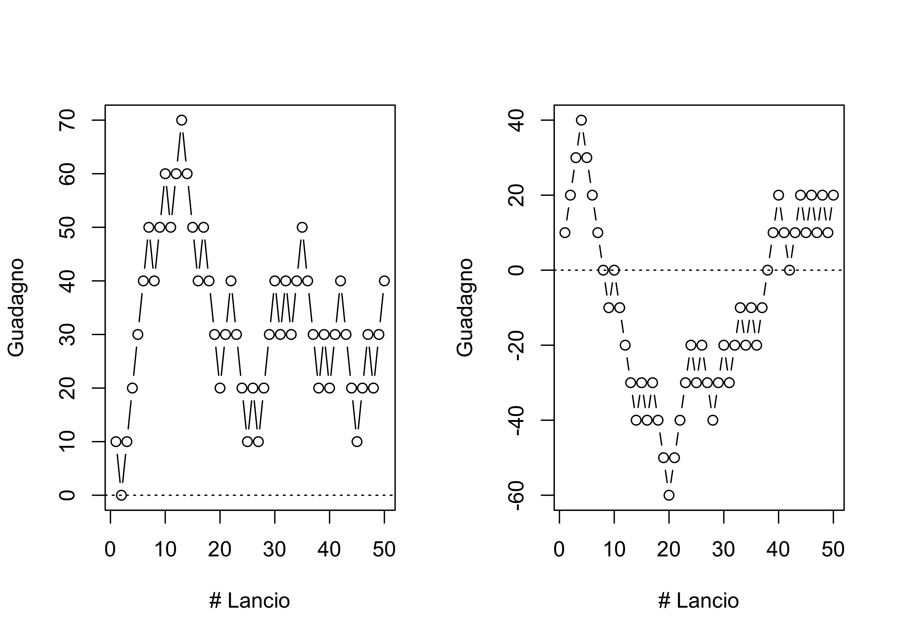
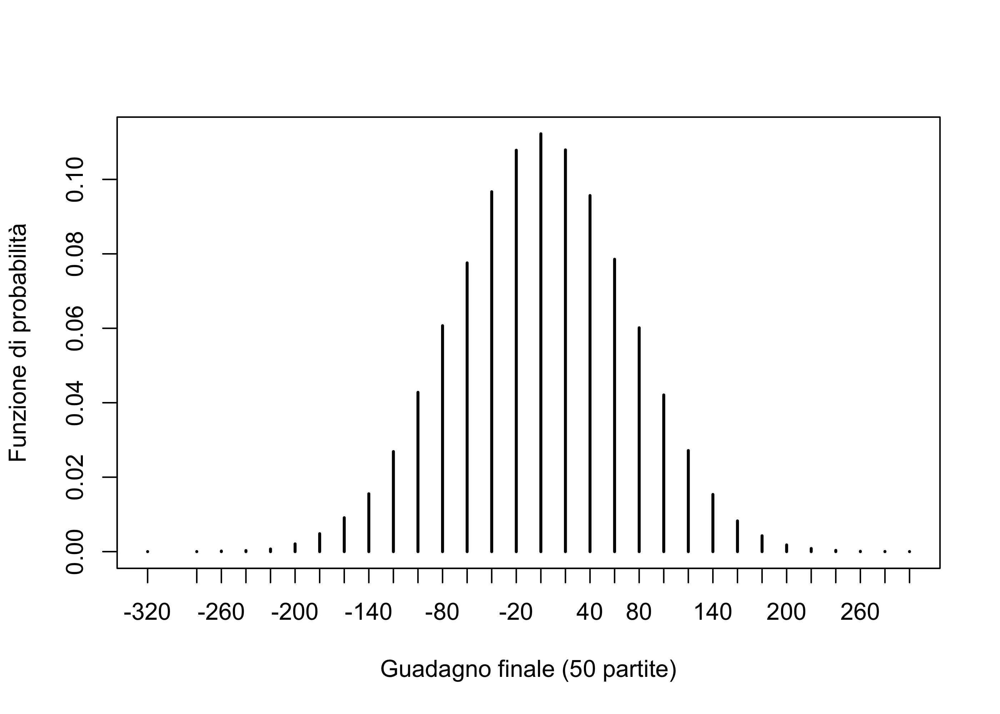
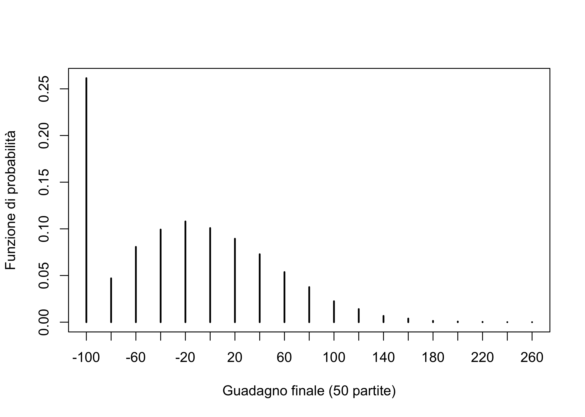

[1] -10 -10 -10 10 -10 10 10 10 -10 -10 10 10 10 -10 10 -10 10 -10 -10
[20] -10 -10 10 -10 -10 -10 -10 10 10 -10 10 -10 10 -10 10 10 -10 -10 -10
[39] -10 10 -10 10 10 -10 -10 -10 -10 10 -10 -10R per l’analisi statistica multivariata
Unità J: casinò, roulette e simulazioni Monte Carlo
Un breve sommario
In questa unità studieremo tramite simulazione alcuni giochi d’azzardo.
In particolare, analizzeremo cosa succede ad un ipotetico giocatore che persiste a scommettere per varie volte alla roulette.
Considereremo scenari progressivamente più complessi, ipotizzando da principio un semplice gioco in cui due giocatori si sfidano al lancio della monetina.
In seguito, considereremo il caso in cui il gioco sia “truccato” ovvero non equo, come ad esempio la roulette di un casinò.
Infine, considereremo un’ulteriore elaborazione del caso precedente, includendo nella simulazione il fatto che i giocatori coinvolti hanno un budget limitato.
Un primo semplice gioco
Assumiamo quindi che A e B giochino ad esempio 50 volte al lancio della monetina.
Quanti soldi avrà mediamente vinto / perso il giocatore A al termine dei 50 lanci?
Qual è la distribuzione del guadagno finale?
Qual è la probabilità di vittoria, ovvero la probabilità che il guadagno sia positivo?
Il lancio della monetina I
Il comando che simula una singola partita, ovvero 50 lanci di monetina dal punto di vista del giocatore A, è il seguente:
Noi siamo tuttavia interessati al guadagno del giocatore A. Ovviamente per ottenere i guadagni di B è sufficiente cambiare il segno dei risultati.
Il guadagno del giocatore A dopo ciascun lancio di monetina è pari a
Il lancio della monetina II
par(mfrow=c(1,2))
set.seed(250)
plot(1:50, cumsum(sample(c(-10, 10), 50, replace = TRUE)), type = "b", xlab = "# Lancio", ylab = "Guadagno")
abline(h = 0, lty = "dotted")
plot(1:50, cumsum(sample(c(-10, 10), 50, replace = TRUE)), type = "b", xlab = "# Lancio", ylab = "Guadagno")
abline(h = 0, lty = "dotted")
Simulazione di un’intera partita
Siamo interessati ad indagare la variabile aleatoria X, che rappresenta il guadagno finale del giocatore A, ovvero la somma algebrica dei guadagni e delle perdite.
Per esempio, un’estrazione casuale dalla distribuzione di X, ovvero il risultato finale di una partita si ottiene come segue:
# Ottengo il guadagno finale (una volta sola)
set.seed(123)
sum(sample(c(-10, 10), 50, replace = TRUE))[1] -100Possiamo quindi usare il comando replicate, che ripete la stessa operazione varie volte. In questo modo otteniamo R copie iid X_1,\dots,X_R.
Analisi dei risultati
Grazie ai risultati teorici dell’unità I, possiamo utilizzare i valori simulati X_1,\dots,X_R per imparare qualcosa sulla distribuzione di X.
In primo luogo approssimiamo il valore atteso tramite la somma \mathbb{E}(X) \approx \frac{1}{R}\sum_{r=1}^RX_r.
Ne concludiamo quindi che si tratta di un gioco equo, dato che mediamente né vince né si perde, ovvero \mathbb{E}(X) \approx 0.
Tuttavia, i risultati differiscono molto da una partita ad un’altra, dato che:
Analisi dei risultati
par(mfrow = c(1, 1))
plot(table(final_earning) / R, xlab = "Guadagno finale (50 partite)", ylab = "Funzione di probabilità")
La distribuzione del guadagno finale è quindi simmetrica attorno allo zero.
Vogliamo infine calcolare la probabilità di vittoria, definita come \mathbb{P}(X > 0).
Consideriamo quindi la variabile aleatoria binaria Z = \mathbb{1}(X > 0).
Approssimiamo l’evento contando i successi verificatisi tra le variabili Z_1,\dots,Z_R.
La probabilità di vittoria è pertanto inferiore a 0.5, mentre la probabilità di parità, ovvero \mathbb{P}(X = 0), è positiva:
La roulette americana I
Il gioco del “lancio della monetina’’ è concettualmente identico ad un gioco d’azzardo ben più popolare, la roulette.
Supponendo di scommettere sul rosso (o sul nero) 10 euro, questo gioco d’azzardo può essere simulato usando sostanzialmente lo stesso codice discusso finora.
C’è però una differenza importante, soprattutto da un punto di vista finanziario: la presenza dello zero e del doppio zero.
La roulette americana II
Supponendo di scommettere 10 euro sul rosso, la probabilità di vincerne altrettanti non è più 1/2, come nel caso del lancio della monetina, bensì: \mathbb{P}(\text{``Vincere puntando sul rosso''}) = \frac{18}{38} \approx 0.474. Si tratta quindi, come ben noto, di un gioco non equo, in cui il banco dispone di un vantaggio.
Siamo interessati ad indagare la variabile aleatoria X, che rappresenta il guadagno finale del giocatore nei confronti del banco:
Simulazione ed analisi dei risultati
Tramite gli stessi comandi usati in precedenza, ripetiamo R volte l’operazione per studiare la distribuzione di X.
Commenti ai risultati
Il valore atteso del guadagno finale \mathbb{E}(X) è negativo e circa pari a -26.
La probabilità di vittoria e di pareggio diminuiscono rispetto al “lancio della monetina”.
L’intera distribuzione è spostata verso valori negativi rispetto al primo scenario.
Questi risultati sono una formalizzazione del detto popolare “il banco vince sempre”. Per questo gli statistici non giocano d’azzardo, o quantomeno non alla roulette!
Uno scenario più realistico
L’implicita ipotesi delle simulazioni precedenti è che sia il giocatore che il banco abbiano un budget superiore a 500 euro, ovvero la perdita massima.
Consideriamo quindi il caso in cui il giocatore abbia un budget massimo, ad esempio 100 euro, così come il banco, ad esempio 100,000 euro.
Il giocatore continua a scommettere fino ad un massimo di 50 volte solo se ha ancora soldi a disposizione. Altrimenti, è costretto a fermarsi.
# Funzione che simula il guadagno finale dopo 50 scommesse
sim_match <- function(player_budget, casino_budget, p_winning){
player_money <- player_budget
casino_money <- casino_budget
for(r in 1:50){
outcome <- sample(c(-10, 10), 1, prob = c(1 - p_winning, p_winning))
player_money <- player_money + outcome # Aggiorno il budget giocatore
casino_money <- casino_money - outcome # Aggiorno il budget casinò
if(player_money <= 0){
# Giocatore in rovina: il giocatore perde tutto il budget
return(- player_budget)
}
if(casino_money <= 0){
# Casinò in rovina: il casinò perde tutto il budget
return(casino_budget)
}
}
player_money - player_budget # guadagno rispetto al valore iniziale
}
set.seed(220)
sim_match(100, 100000, p_winning)[1] -60Simulazione ed analisi dei risultati
Tramite gli stessi comandi usati in precedenza, ripetiamo R volte l’operazione per studiare la distribuzione di X.
Distribuzione di probabilità
plot(table(final_earning) / R, xlab = "Guadagno finale (50 partite)", ylab = "Funzione di probabilità")
Possiamo osservare un “picco” di probabilità nel valore -100 e pertanto circa il 25\% delle volte il giocatore finisce in bancarotta.
Con un budget di 100,000 euro, è impossibile che il banco vada in rovina.
Al tempo stesso, il valore atteso rimane negativo, ovvero \mathbb{E}(X) = -24, ma è tuttavia superiore a quello ottenuto nel modello con budget illimitato, ovvero circa -26.
In un certo senso, il banco non può sottrarre al giocatore i soldi che questo non possiede.
Da questo desumiamo la strategia di gioco ottimale alla roulette: bisogna entrare nel casinò con pochi spiccioli in portafoglio o, idealmente, con assolutamente nulla.